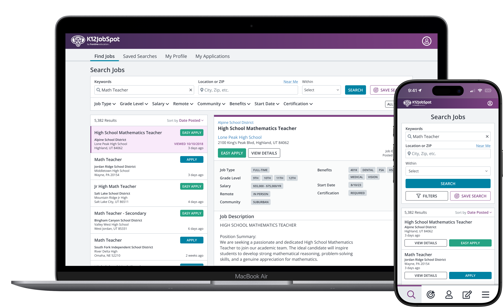
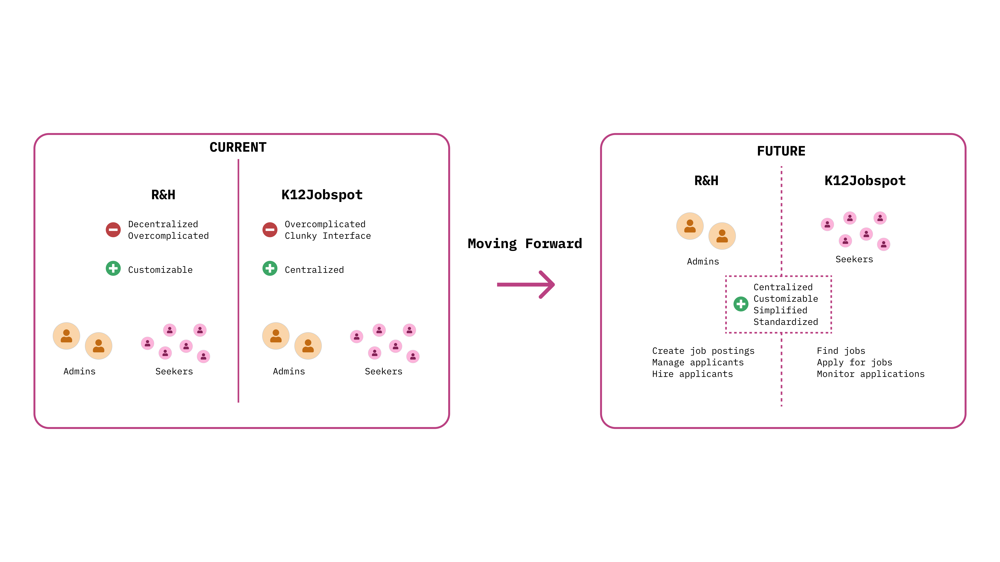
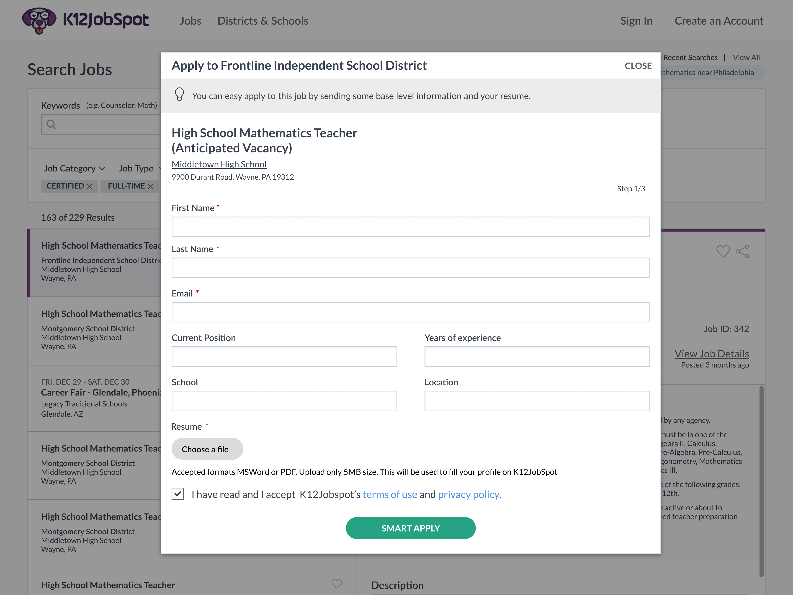
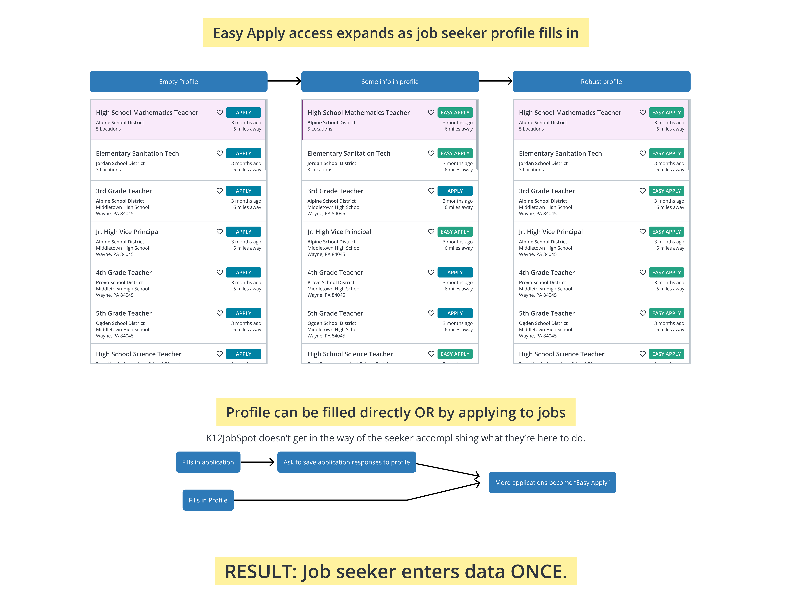
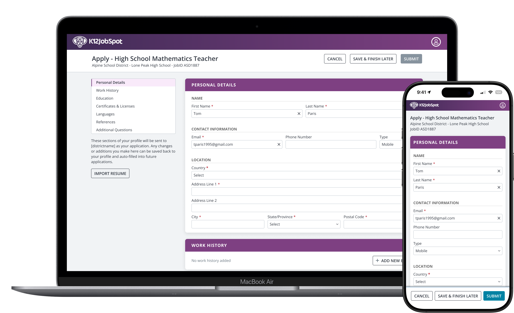
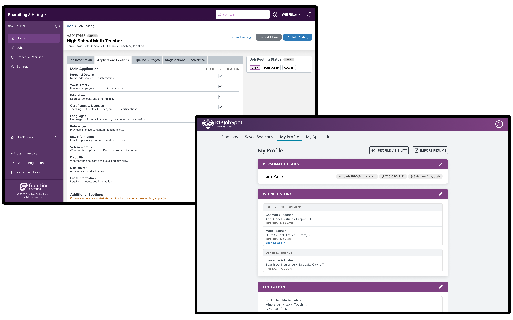

Frontline Education - K12JobSpot
Easy Apply
Why K12JobSpot's Easy Apply doesn't work like LinkedIn's.
Ran interviews with school districts to test a plan Product had already scoped, then designed a profile-based application system as the alternative when the plan didn't hold up.
Product had planned Easy Apply as a copy of LinkedIn's — take less applicant data in exchange for more applications — but no one had checked whether our districts would actually accept that trade.
Every medium and large district rejected the concept of a resume-only model outright; application volume and compliance rules made it a non-starter for most of the customer base.
Average time to apply dropped from 1h 20m to 35m, and districts are seeing roughly 23% more applicants. The Easy Apply system I conceptualized satisfied the needs of both job seekers and employers.

Some context
K12JobSpot is the largest K-12-focused job board in the country. As part of its rebuild, one priority was connecting it to Recruiting & Hiring — Frontline's applicant tracking system, itself being rebuilt after nearly 20 years. Both systems belonged to Frontline, which gave us an option most competitors didn't have: designing the job-seeker and employer sides of the hiring flow as one connected system instead of two disconnected ones.

The problem
Repetitive data entry is one of the best-documented reasons job seekers abandon online applications — research, customer feedback, and my own experience applying to jobs all point the same direction. The employer side has the opposite constraint: many school districts can't accept a resume-only application. Depending on the state, they're required to collect very specific information up front — particular teaching certificates, detailed criminal-background questions, minimum years of experience, student-teaching history — none of which a resume reliably captures. On top of that, districts field high application volumes they need to screen quickly.
Product had written requirements before I got involved, and the direction was LinkedIn's Easy Apply model: less information up front, higher application volume. It wasn't a bad instinct — a known competitor was doing it, and matching a proven pattern is a reasonable default when you don't have better information. But nobody had tested whether our districts would accept that tradeoff.

The research
I ran interviews with 11 districts across a range of sizes to test the LinkedIn model against our actual employer base, since the job-seeker side of the problem was already well understood.
The split was clean. The small district I interviewed was fine trading a resume-only application for more applicants; they were already doing exactly that on LinkedIn. Every medium and large district said no. They receive high volumes per posting and need structured information up front to screen candidates, so a resume upload wasn't enough, and for some, compliance requirements ruled it out entirely.
The result reframed the project. The obvious move, matching LinkedIn, would only work for the smallest slice of our customer base.
An alternative
I proposed a profile-based architecture instead. Application sections map to standardized job-seeker profile sections. Employers choose which categories they require; job seekers fill each section out once and reuse it across every application. As a profile fills in, jobs it already qualifies for get flagged "Easy Apply," dropping the process to three clicks — without ever asking employers to accept less data.
The initial reaction was enthusiastic; nobody was attached to the LinkedIn model for its own sake, they just hadn't had a reason to consider anything else. It still took a few follow-up conversations before stakeholders fully let go of it. The LinkedIn pattern was the mental default, and moving people off a default takes more than one good meeting, even when nobody actively opposes the alternative.
I built out the concept, user flows, diagrams, and interaction model, then worked with Product and Engineering to align on how profile data, employer requirements, and matching logic would operate together.

Outcome
The numbers that came in after launch backed the bet. Average time to complete an application dropped from 1 hour 20 minutes to 35 minutes across all users. Among people who applied to more than one job in a month, the average number of applications went from 4 to 9. On the employer side, districts are seeing a 23% increase in application volume on average.
Easy Apply is now one of K12JobSpot's primary differentiators for job seekers: as far as we know, no job board at this scale runs Easy Apply this way. Sales, marketing, and leadership have all rallied behind it, and it tested well on both sides (job seekers and employers). Districts got the structured data they needed, and job seekers were openly relieved not to re-enter the same information on every application.
The standardized profile architecture also opened up work that was never in the original scope like reporting, filtering, and candidate matching.
The new tradeoff
The profile model front-loads work onto a job seeker's first application. Easy Apply only kicks in once there's enough saved data to match a posting's requirements, so a brand-new user still does the manual entry up front. A resume parser takes the edge off, so job seekers don't start from scratch, but the first application is never as light as the ones that follow. But once a seeker has applied a few times the process becomes much faster.

What it came down to
This was an excellent opportunity to leverage the ownership structure of these two new products. LinkedIn trades applicant data for convenience because it doesn't own the employer's hiring system. Frontline owned both the job board (job seekers) and the applicant tracking system (employers), which meant the tradeoff everyone treated as unavoidable was one we could actually design around. The product would be missing one of its biggest strengths without this approach.
